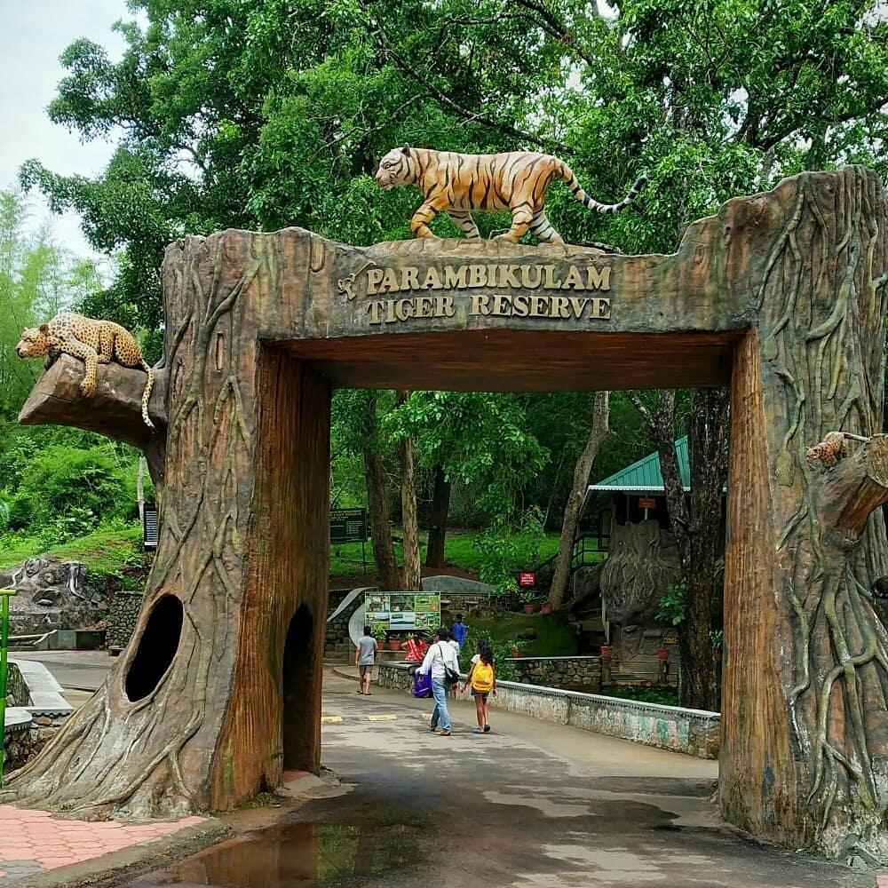

Silent Valley National Park
The Silent Valley National Park, with its lush green forests and beautiful views of the rich flora, is a popular destination for nature and wildlife lovers in Kerala. With its long, detailed history and the unique status of a Rain Forest, this national park is truly a sight to visit. The well-planned Safari and the beautiful stop-overs around the park only make a trip to this part of Kerala more worthwhile.

Parambikulam Tiger Reserve
Blooming with in rare varieties of medicinal plants, orchids and fauna, the Parambikkulam Wildlife Sanctuary is hailed to be one of the best wildlife sanctuaries in South India.